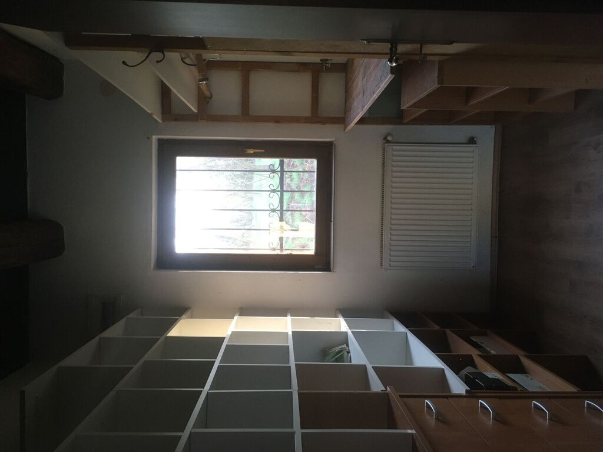
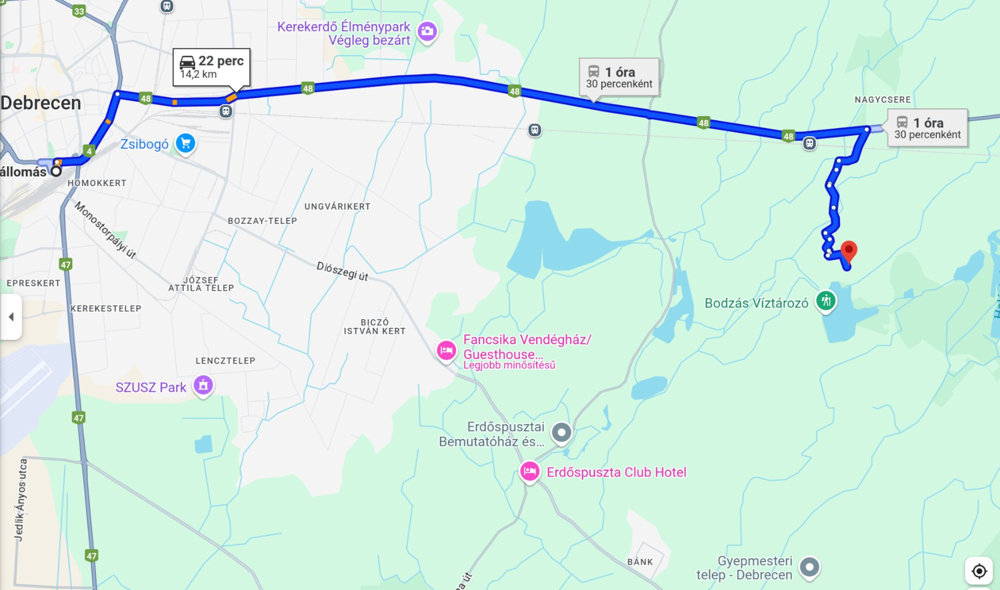

Debrecen, 2025. április 14. (Diviánszky Ákos)
Fontos! Ez a hirdetés azoknak szól akik saját részre keresnek ingatlant, közvetítők, kérem, ne keressenek.
Régi erdészház újraépítésével épült 2007-ben, beton alapra, téglából, látszó gerendás födémmel, 2 rétegű fa nyílászárókkal, 10cm-es hőszigeteléssel, laminált padló és kerámia burkolatokkal.

Hasznos alapterület 90,5 m2, ebből a hőszigetelt rész (két szoba, közlekedő, gardrób, fürdőszoba, étkezős konyha) 75,8 m2, a kamra és a kazánház 14,7 m2. A garázs 44,6 m2 alapterületű.
Fűtése radiátoros, vegyestüzelésú kazánnal, ami a villanybojler indirekt fűtését is ellátja.
Vízellátása saját fúrott kútról biztosított, a szennyvíz szikkasztóba kerül. Az épület tájolása nyugati. A délre néző garázstetőn van lehetőség napelem telepítésére.
Az épület 1600m2-es “kivett tanya” területen áll, ebből a ház előtt 600m2-es bekerített kert található, ahol az elmúlt évtizedben vegyszermentes gazdálkodás és talajépítés folyt. A kertre nagy teraszról látunk rá, amit - a házzal együtt - egy százéves fa véd a nyári nap tüzétől.
Az épület és a kert egy 3600 m2-es tisztáson helyezkedik el az erdő szívében. Az erdő határa a tisztástól 300-400-re esik bármelyik irányba indulunk.
Különböző korú, fiatalos és vágásérett erdei fenyő és akác részletekből áll az erdő. A terület nagyobbik fele dimbes-dombos, 3-6m magasra hullámzó domborzattal, ami elsőre az fák takarásában nem is tűnik fel.
Dél felé indulva az erdőt a Bodzás víztározó határolja. A Bodzást csak akkor töltik meg, ha a Fancsikai tavak már megteltek, ezért leggyakrabban egy nagy legelőnek látszik. Ám amikor megtelik, vízi paradicsommá válik. A többi irányban más erdőket, az erdőspusztára jellemző tisztásokat, legelőket találunk.
Az erdő egyik sarkánál halad az Alföldi Kék Túra útvonala.
A környezet kifejezetten csendes, de korántsem lakatlan. Egy kilométeres sugarú körben 5 tanya található, a legközelebbi légvonalban 380m-re. A környéken gazdálkodó, tevékeny emberek laknak, akik a természettel összhangban igyekeznek élni, akikkel jó kapcsolódni.
Egy közmű után kell fizetni, ez az áram, 32A. A villanyvezetéket és póznákat néhány éve teljesen kicserélték, az áramellátás stabil.
Debrecentől keletre, a város erdőspusztás pihenőövezetében fekszik. Bár a pihenőövezet kialakításának nagyszabású tervei 1990 után nem folytatódtak, ebben az irányban gyárak azóta sem épültek; a környék csendes, tiszta, nyugodt.
A tanya Debrecen és Vámospércs között épp félúton található.
A környék itt laza tanyás szerkezetű. Közeli kistelepülés Nagycsere (2,5km), ahol 40 család él, és Haláp (5km) ahol 400-500-an élnek.
Fontosabb távolságok közúton: - Debrecen központja 13km - Vámospércs központ 13km - M35-ös autópálya 20km - Debreceni Nemzetközi Repülőtér 20km - országhatár 20km.
A busz és a vasúti megálló is 2,5km földúton.
Google Maps link a 48-as úttól

Az irányár 150 millió Forint.
A tanyát 2021-ben 53 millió Forintra értékelték, most egy kisebb felújításon esik át. Errefelé az ilyen állapotú erdő hektárja 1,5 millió Forint.
Ezek alapján kérem, 110 millió forint alatti ajánlatokkal ne keressenek. A magasabb irányárat az indokolja, hogy az erdő ilyen méretű és tömbben van, hogy nem osztatlan közös hanem egy tulajdonosa van, hogy a tanya épp a közepén van, és a közvetlenül a tó melletti elhelyezkedés.
Miért csak együtt eladó a tanya és az erdő?
Ritka, ezért talán többeknek értékes, hogy saját védősávja legyen az embernek a lakóhelye körül, és így ő maga tartsa kézben mi történik azzal. Egyre fenntarthatatlanabb világunkban megnyugtató gondolat, hogy karnyújtásnyira van tüzifa, épületfa, vagy van hol legelni az apró vagy nagyobb jószágnak. (Igen, az erdőspusztás erdőben van hol legelni még a szarvasmarhának is.)
Internet van?
A mobilnet már évek óta kielégítő. Akinek az nem elég, annak jó hír, hogy a Z-Net tanyavilágot ellátó szélessávú vezetéke az erdő szélénél fut, be lehet kötni.
Érdeklődöm!
Ez a hirdetés azoknak szól akik saját részre keresnek ingatlant, közvetítők kérem ne hívjanak. A +36 30 661 8846-as magánszámon lehet érdeklődni kedd és csütörtök 10-17 óra között.
Ha tetszik ez a hirdetés, de számodra nem aktuális, kérlek, oszd meg,
hogy rátaláljon a gazdája. :) Köszönöm!s>